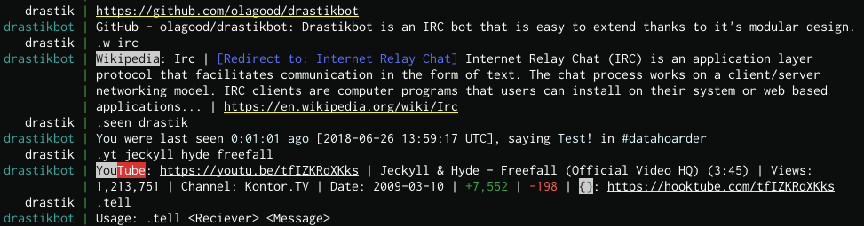

Drastikbot is an IRC bot focused on its extensibility and personalization.
Version 2.1 offers a new User Access List to stop users from abusing the bot's features and an interface that allows Channel Operators and Bot Owners to access the bot's moderation and personalization features over IRC.
You can download drastikbot and it's modules from the project's git repository on GitHub.
Read the Quick Guide to get help with the installation and configuration of the bot. To extend and personalize drastikbot by writing your own modules read the Module Documentation.
Quick Guide | Module DocumentationIf you have any questions about the bot or need help, feel free to contact drastik on Freenode or Rizon.